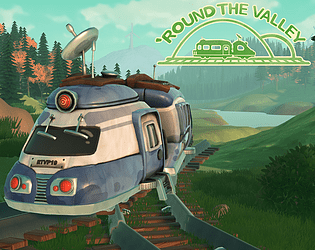
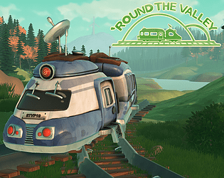
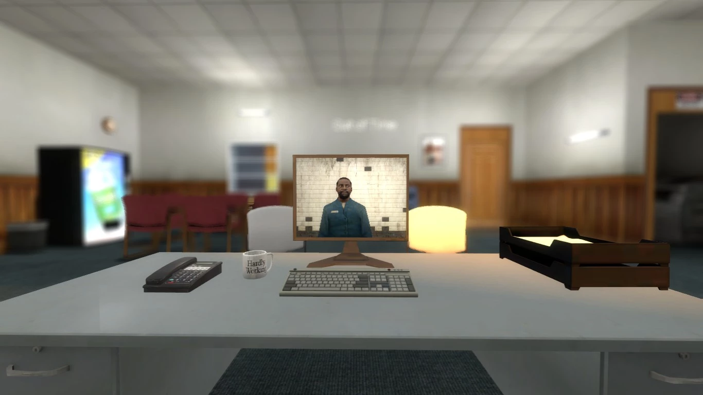
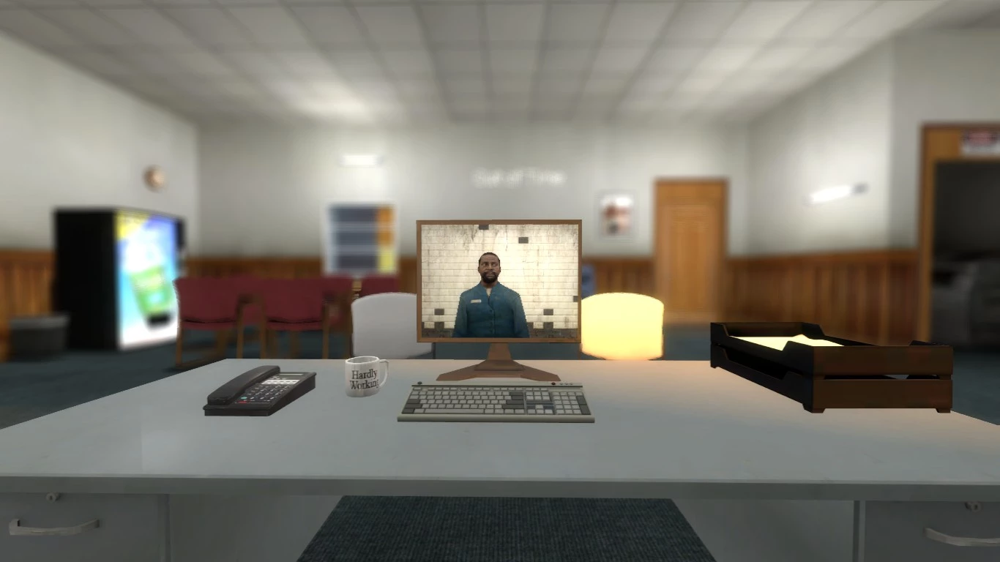

Léo Abbaz
Junior Level Designer.
À propos
Je fais du Level Design depuis 2020. Game Designer avant tout, j'aborde la conception d'un jeu dans sa globalité, en partant de sa musique et de son univers. Comment mon niveau arrive à transmettre une histoire, des émotions ? Ce genre de questions rythme mes journées.
Parcours
- 2022-2024 : Master JMIN, option Game Design - Cnam-ENJMIN
- 2017-2021 : Licence de Sociologie - Université Rennes 2
- 2015-2017 : Baccalauréat Technologique STI2D, option Systèmes d'Information Numérique
Portfolio
Voici une sélection de projets sur lesquels j'ai travaillé avant et pendant mon master au Cnam-ENJMIN.


In Life, Heart and Mind
Page explicative en cours de rédaction
Unreal Engine 5, Cnam-Enjmin, équipe de 10. Octobre 2023-Février 2024.
Rôles : Level et Narrative Design.
Un action-platformer où Ilham parcourt un monde surréel pour le sauver d'une corruption tout en apprenant à s'aimer.
Télécharger

Better Late than Basic
Unity, Cnam-Enjmin, équipe de 9. Décembre 2022.
Rôles : Game et Level Design de jeu de conduite.
Dévalez la montagne et tunez votre caisse, car arriver en premier ne sert à rien si vous n'avez pas de flow.
TéléchargerUnsubscribing
Source Engine, solo. Octobre 2021.
Rôle : Level Design de niveaux d'exploration et de combat dans Half-Life 2.
Deux niveaux parlant de se désabonner d'un service, d'une manière ou d'une autre.
Télécharger 

'Round the Valley
Unity, Cnam-Enjmin, équipe de 5. Mars-Juin 2023.
Rôles : Level et Narrative Design.
Amina, la dernière conductrice de train de la vallée, fait face à un dilemne personnel. Peut-être que ses passagers l'aideront à faire un choix.
Télécharger
Where the Knights Meet
GZDoom, Cnam-Enjmin, solo. Décembre 2022.
Rôle : Level Design d'un niveau de DOOM II.
Échappez-vous d'une prison et combattez des ennemis de plus en plus féroces.
Télécharger 

Map Labs
Source Engine, solo. Décembre 2020-Février 2022.
Rôle : Level Design de niveaux d'exploration et de combat pour des map jams dans Half-Life 2.
Plusieurs niveaux sans relation particulière, réalisés à mes débuts en level design.
TéléchargerDivers
Quelques jeux de jam et projets sur lesquels j'ai travaillé.

Teach Me! Mr. Punching Bag
Unity, GMTK Game Jam 2023, équipe de 6. Juillet 2023.
Rôles : Voice acting, modélisation sur ProBuilder, textures de ces modèles sur Aseprite.
Vous êtes un sac de frappe face à un nouveau boxer ayant du mal à viser ses coups. Aidez-le comme vous pouvez.
Jouer
A Gruesomely Overflowing Halloween Special
Web, équipe de 30. Octobre 2020.
Rôle : Écriture de pages de promotion.
Une mise à jour Halloween pour un projet communautaire de Team Fortress 2, avec une page de promotion écrite dans le style de Valve.
Consulter
A Dice Meal
Unity, GMTK Game Jam 2022, équipe de 5. Juillet 2022.
Rôles : Voice acting, environnement sur ProBuilder.
Placez les dés sur la bonne face dans la poêle et marquez des points.
Jouer
Asteroid Redux
Source Engine, duo. Juillet 2020-Décembre 2022.
Rôle : Environment Art, Level Design.
Complétion d'un niveau de Team Fortress 2 abandonné par Valve. Artpass, création de zones non-jouables et de variantes de modèles 3D.
Consulter